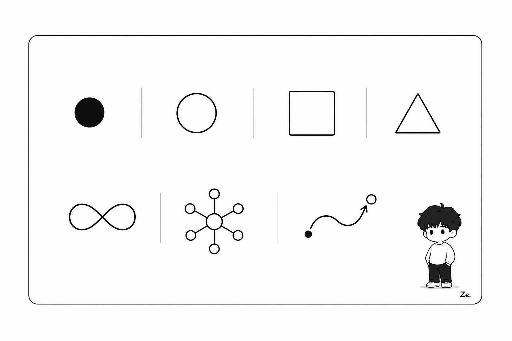
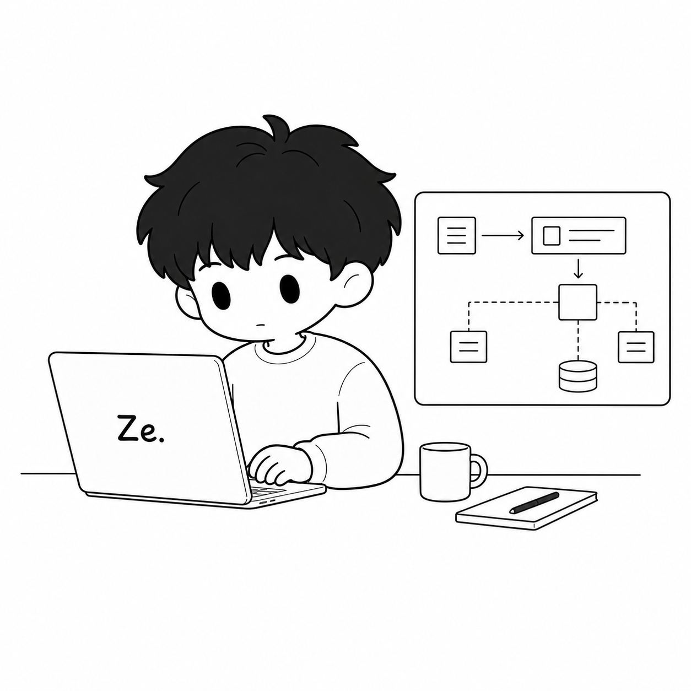
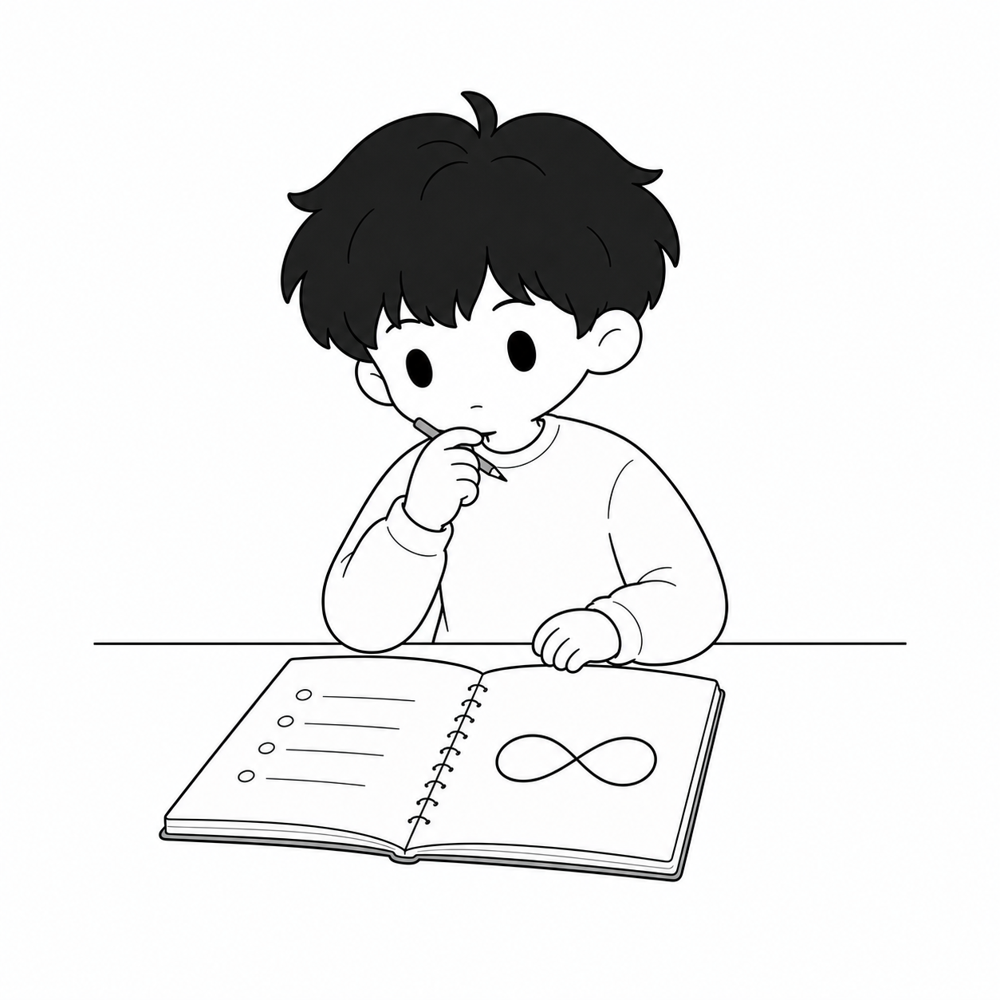

学术研究
适合列表、文章索引和阅读页。结构轻，不把标题包进大容器。
最终组件板展示 hover、selected、focus、loading、tabs、accordion 和不同内容密度。
丰富感来自分类、状态、动效和排版节奏，而不是把所有内容塞进同一种卡片。
小标题可以有颜色和 Dot，但不要每个 section 都套同一个 uppercase eyebrow。
适合列表、文章索引和阅读页。结构轻，不把标题包进大容器。
适合解释性模块和方法论页面。
适合工具页和资源页，信息密度更高，但仍保持白底和清晰层级。
用列表承载可扫描内容，避免所有项目都变成一样的 feature cards。
低饱和色可以用于分类和高亮；active 状态由 Dot、边线和文字颜色共同表达。
颜色像阅读辅助，不像装饰。Code panel 不再继承旧复古电脑窗口风格。
AI can assist, but the teacher keeps final judgment.
Acquire → Deepen → Create becomes a progression path.
Do not let automated output become final evaluation.
<article class="ze-article">
<figure class="ze-figure fit-wide">
<img src="concept.png" alt="...">
<figcaption>One figure explains one micro-concept.</figcaption>
</figure>
</article>Production figures still use Ze Universe / article illustration rules；这里用 approved anchors 展示网页适配。



React Bits 给我们的启发是“组件应该有行为”；Ze 的版本保持轻量，不用强动效库。
Use for publications, reading notes, methods, and academic context.
Use for classroom experiments, product decisions, and applied resources.
Use for dense functional surfaces with filters, states, and results.
顺序是真正有意义时才编号；Dot loading 是状态提示，不是角色表演。
Gather source material and classroom signals.
Turn signals into judgment, feedback, and method.
Package the output as writing, tools, or teaching material.
Use a Dot rhythm for loading, analysis, or route transitions.